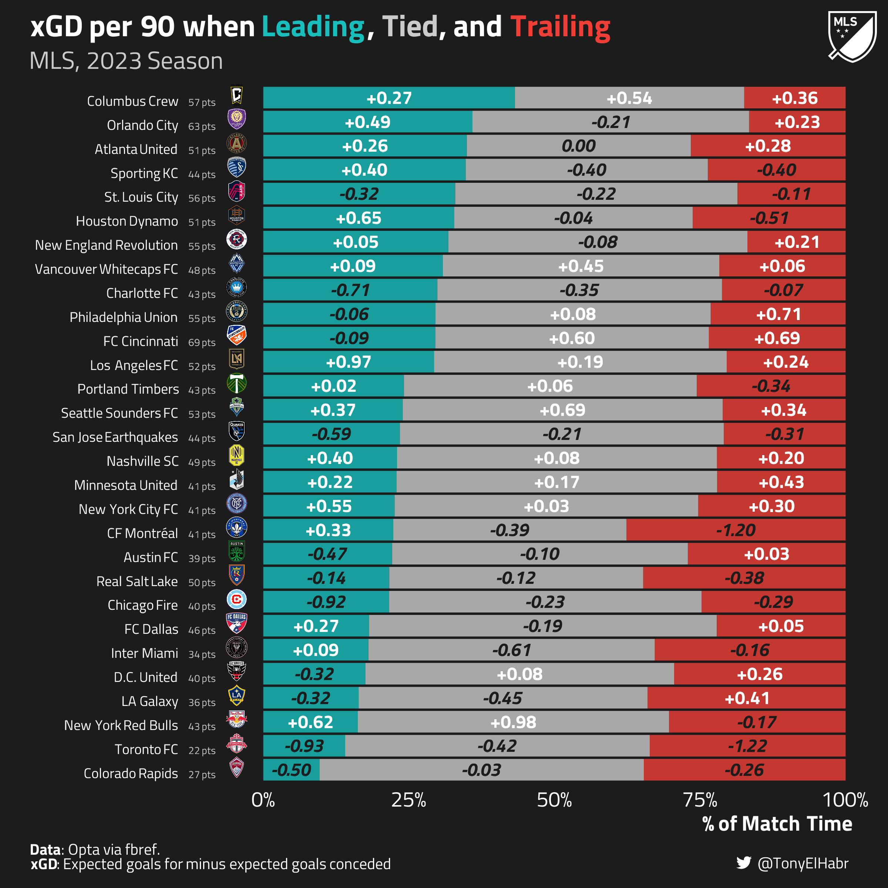

Calculating expected goal difference (xGD) with respect to game state, using FBref data.
Author
Tony ElHabr
Published
October 25, 2023
Introduction
Soccer, a game defined by its discrete, low-scoring nature, thrives on the dynamics of the “game state”. Whether a team is leading, trailing, or level with their opponent at a specific moment can wield a profound influence on their tactical choices and overall approach. It’s the kind of context that can shed new light on key statistics like shots and expected goals (xG).
Consider this scenario: a team enters a match as heavy favorites, and they gain a substantial lead early on. As they switch to a more defensive strategy–“loss aversion”–the number of shots taken and xG accumulated may appear unexpectedly low, potentially raising eyebrows. But when you factor in that this favored team spent more than half the game with a comfortable 3-goal lead, those seemingly “poor” statistics suddenly take on a different meaning.
The idea seems straightforward, right? Yet, game state analysis remains somewhat underutilized in the world of soccer analytics. Why is that? Well, it’s not without its challenges. Contextualizing numbers according to game state can introduce biases, leading us to over-attribute outcomes to tactical choices. Moreover, the calculations involved can be far from trivial.
So that’s what this post is for. I’ll walk through how to calculate expected goals difference (xGD)1–the difference between your team’s expected goals and your opponent’s–with respect to the game state, using data from FBref.
Data pull
The 2023 Major League Soccer (MLS) regular season just ended, and I’m interested to see what we might learn about the teams who qualified for playoffs. So, naturally, I’ve chosen to focus on this past MLS season for our game state calculations.
To begin, we pull raw FBref data from pre-saved {worldfootballR} release data, starting with match shots.
Given a match URL like this, worldfootballR::load_fb_match_shooting() provides data from the “Shots” table on the page.
While it might seem like the shots table is all we’d need to calculate expected goal difference (xGD), FBref’s match shot log table doesn’t include own goals. Nonetheless, we can use worldfootballR::load_fb_match_summary() to extract timestamps for own goals from the “Match Summary” timeline.
Up to this point, we have one record per shot. But, to calculate goals and expected goals (xG) conceded for any given team at any given point in a game, we can make our lives easier by “double counting” each shot event, once from each team’s perspective.
To do that, we first re-assign (“re-stack”) teams and goals based on the home and away teams’ perspectives.
Then, we replicate the whole data frame, indicating whether we’re looking at the shot events from a given team’s point of view (pov = "primary") or their opponents’ point of view ("secondary").
Oh, wait! We should probably account for the amount of time spent in a game state when contextualizing xGD. To do that properly, we should add more synthetic records for the end of halves.
Unfortunately, FBref does not provide the exact ending minute of each half, as far as I know. Thus, we’ll “pad” our data with artificial records to mark the end of halves–the 45th minute in the first half / 90th minute in the second half–using some heuristics.
If there are no shots after the last regular minute in a half, we add 3 minutes. (3 minutes is about the median amount of minutes allocated for extra time.)
If the last shot is after the last regular minute in a half, we take the maximum of:
Adding 3 minutes beyond the last regular minute (like (1)) or
Adding one minute beyond the last shot.
Code
LAST_MIN_BUFFER <-3last_min_pad <- gamestate_shots |> dplyr::select( match_id, season, date, team, pre_shot_gamestate, period, time ) |> dplyr::group_by(match_id, team, period) |> dplyr::slice_max(time, n =1, with_ties =FALSE) |> dplyr::ungroup() |> dplyr::mutate(xg =0,xgd =0,last_regular_min =ifelse(period == 1L, 45L, 90L),time =pmax(last_regular_min + LAST_MIN_BUFFER, time +1) )padded_gamestate_shots <- dplyr::bind_rows( gamestate_shots, last_min_pad) |> dplyr::arrange(match_id, time)gamestate_shots_and_durations <- padded_gamestate_shots |> dplyr::group_by(match_id, team) |> dplyr::mutate(prev_period = dplyr::lag(period),prev_time = dplyr::lag(time) ) |> dplyr::ungroup() |> dplyr::mutate(duration = dplyr::case_when( period == 1L &is.na(prev_period) ~ time - 0L, period == 2L & period != prev_period ~ time - 45L,TRUE~ time - prev_time ) )
As the saying goes, “80% of data analysis/science is data cleaning”. Well, that rings true here, as all we need to do at this point is perform a few common {dplyr} and {tidyr} actions to arrive at xGD by game state. Oh, and we should contextualize game state xGD by how long a team has spent in each game state (duration).
agg_gamestate_xgd#> # A tibble: 87 × 4#> team pre_shot_gamestate xgd_p90 prop_duration#> <chr> <fct> <dbl> <dbl>#> 1 Atlanta United Trailing 0.277 0.266#> 2 Atlanta United Tied -0.00208 0.385#> 3 Atlanta United Leading 0.262 0.350#> 4 Austin FC Trailing 0.0287 0.271#> 5 Austin FC Tied -0.0978 0.508#> 6 Austin FC Leading -0.474 0.221#> 7 CF Montréal Trailing -1.20 0.376#> 8 CF Montréal Tied -0.388 0.400#> 9 CF Montréal Leading 0.327 0.223#> 10 Charlotte FC Trailing -0.0656 0.212#> # ℹ 77 more rows
We did all that work, so let’s make a pretty graph that conveys both:
the proportion of time spent in a given game state, and
for every team. Keep in mind that an xGD per 90 of +0.50 means that you’re accumulating half a goal’s worth of shot quality more than you’re giving up over the course of a game. While this number may seem small, that’s quite a good number over the course of an entire season.
Code
## logo scrapinglibrary(httr)library(jsonlite)## plottinglibrary(ggplot2)library(sysfonts)library(showtext)library(ggtext)library(htmltools)library(grid)library(scales)TAG_LABEL <- htmltools::tagList( htmltools::tags$span(htmltools::HTML(enc2utf8('')), style ='font-family:fb'), htmltools::tags$span('@TonyElHabr'),)CAPTION_LABEL <-'**Data**: Opta via fbref.'SUBTITLE_LABEL <-'MLS, 2023 Season'PLOT_RESOLUTION <-300WHITISH_FOREGROUND_COLOR <-'white'COMPLEMENTARY_FOREGROUND_COLOR <-'#cbcbcb'BLACKISH_BACKGROUND_COLOR <-'#1c1c1c'COMPLEMENTARY_BACKGROUND_COLOR <-'#4d4d4d'FONT <-'Titillium Web'sysfonts::font_add_google(FONT, FONT)## https://github.com/tashapiro/tanya-data-viz/blob/main/chatgpt-lensa/chatgpt-lensa.R for twitter logosysfonts::font_add('fb', 'Font Awesome 6 Brands-Regular-400.otf')showtext::showtext_auto()showtext::showtext_opts(dpi = PLOT_RESOLUTION)ggplot2::theme_set(ggplot2::theme_minimal())ggplot2::theme_update(text = ggplot2::element_text(family = FONT),title = ggplot2::element_text(size =20, color = WHITISH_FOREGROUND_COLOR),plot.title = ggtext::element_markdown(face ='bold', size =20, color = WHITISH_FOREGROUND_COLOR),plot.title.position ='plot',plot.subtitle = ggtext::element_markdown(size =16, color = COMPLEMENTARY_FOREGROUND_COLOR),axis.text = ggplot2::element_text(color = WHITISH_FOREGROUND_COLOR, size =14),axis.title.x = ggtext::element_markdown(size =14, color = WHITISH_FOREGROUND_COLOR, face ='bold', hjust =0.99),axis.title.y = ggtext::element_markdown(size =14, color = WHITISH_FOREGROUND_COLOR, face ='bold', hjust =0.99),axis.line = ggplot2::element_blank(),strip.text = ggplot2::element_text(size =14, color = WHITISH_FOREGROUND_COLOR, face ='bold', hjust =0),legend.position ='top',legend.text = ggplot2::element_text(size =12, color = WHITISH_FOREGROUND_COLOR, face ='plain'),legend.title = ggplot2::element_text(size =12, color = WHITISH_FOREGROUND_COLOR, face ='bold'),panel.grid.major = ggplot2::element_line(color = COMPLEMENTARY_BACKGROUND_COLOR),panel.grid.minor = ggplot2::element_line(color = COMPLEMENTARY_BACKGROUND_COLOR),panel.grid.minor.x = ggplot2::element_blank(),panel.grid.minor.y = ggplot2::element_blank(),plot.margin = ggplot2::margin(10, 20, 10, 20),plot.background = ggplot2::element_rect(fill = BLACKISH_BACKGROUND_COLOR, color = BLACKISH_BACKGROUND_COLOR),plot.caption = ggtext::element_markdown(size =10, color = WHITISH_FOREGROUND_COLOR, hjust =0, face ='plain'),plot.caption.position ='plot',plot.tag = ggtext::element_markdown(size =10, color = WHITISH_FOREGROUND_COLOR, hjust =1),plot.tag.position =c(0.99, 0.01),panel.spacing.x = grid::unit(2, 'lines'),panel.background = ggplot2::element_rect(fill = BLACKISH_BACKGROUND_COLOR, color = BLACKISH_BACKGROUND_COLOR))ggplot2::update_geom_defaults('text', list(color = WHITISH_FOREGROUND_COLOR, size =12/ .pt))GAMESTATE_PAL <-c('Trailing'='#ef3e36','Tied'= COMPLEMENTARY_FOREGROUND_COLOR,'Leading'='#17bebb')## There is a way to get team logos from FBref, but they have a white background ## by default, and making the background transparent for a plot with a dark## background is kind of a pain in the ass. So let's pull images from fotmob.## This function is basically a minified version of what used to exist as## worldfootballR::fotmob_get_league_tables(). I rely on FBref and fotmob listing## teams in the same order alphabetically, which works fine for the MLS. A## better, scalable strategy for binding team names between sources is to## order teams by points / placement in the standings.get_fotmob_mls_standings <-function() { url <-'https://www.fotmob.com/api/leagues?id=130' resp <- httr::GET(url) cont <- httr::content(resp, as ='text') result <- jsonlite::fromJSON(cont) table_init <- result$table$data tables <- dplyr::bind_rows(table_init$tables) tables$table$all[[3]] |> dplyr::transmute(team = name,team_id = id, pts,logo_url =sprintf('https://images.fotmob.com/image_resources/logo/teamlogo/%s.png', team_id) )}fotmob_mls_standings <-get_fotmob_mls_standings()team_logos <- agg_gamestate_xgd |> dplyr::distinct(team) |> dplyr::arrange(team) |>## Lucky for us, MLS team names line up with the fotmob names alphabetically. dplyr::bind_cols( fotmob_mls_standings |> dplyr::arrange(team) |> dplyr::select(path = logo_url, pts) )agg_gamestate_xgd_with_logos <- agg_gamestate_xgd |> dplyr::inner_join( team_logos |> dplyr::select( team, pts, path ),by = dplyr::join_by(team) ) |> dplyr::mutate(label = glue::glue("{team} <img src='{path}' width='15' height='15'/>") ) |> dplyr::select(-path)agg_gamestate_xgd_with_logos |>filter(pre_shot_gamestate =='Tied') |>mutate(across(c(prop_duration, pts, xgd_p90), list(rnk = \(.x) row_number(desc(.x))) ),d = prop_duration_rnk - pts_rnk ) |>arrange(desc(abs(d)) )team_label_order <- agg_gamestate_xgd_with_logos |> dplyr::filter( pre_shot_gamestate =='Leading' ) |> dplyr::arrange(prop_duration) |> dplyr::pull(team)prepped_agg_gamestate_xgd <- agg_gamestate_xgd_with_logos |> dplyr::mutate( dplyr::across( team, \(.x) factor(.x, levels = team_label_order) ) ) |> dplyr::arrange(team, desc(pre_shot_gamestate)) |> dplyr::group_by(team) |> dplyr::mutate(cumu_prop_duration =cumsum(prop_duration) ) |> dplyr::ungroup() |> dplyr::mutate(half_cumu_prop_duration = cumu_prop_duration -0.5* prop_duration )xgd_p90_plot <- prepped_agg_gamestate_xgd |> ggplot2::ggplot() + ggplot2::aes(x = prop_duration,y = team ) + ggplot2::scale_y_discrete(name ='',labels = prepped_agg_gamestate_xgd |> dplyr::distinct(team, label) |> tibble::deframe() ) + ggplot2::theme(axis.text.y = ggtext::element_markdown(margin = grid::unit(c(0, 0, 0, 0), 'pt')), ) + ggplot2::geom_col(show.legend =FALSE,alpha =0.8, ggplot2::aes(fill = pre_shot_gamestate ) ) + ggplot2::geom_text(family = FONT,size =12/ ggplot2::.pt,fontface ='bold',color = WHITISH_FOREGROUND_COLOR,data = dplyr::filter(prepped_agg_gamestate_xgd, xgd_p90 >=0), ggplot2::aes(x = half_cumu_prop_duration,y = team,label = scales::number(xgd_p90, accuracy =0.01, style_positive ='plus') ) ) + ggplot2::geom_text(family = FONT,size =12/ ggplot2::.pt,fontface ='bold.italic',color = BLACKISH_BACKGROUND_COLOR,data = dplyr::filter(prepped_agg_gamestate_xgd, xgd_p90 <0), ggplot2::aes(x = half_cumu_prop_duration,y = team,label = scales::number(xgd_p90, accuracy =0.01) ) ) + ggplot2::scale_x_continuous(labels = scales::percent_format(accuracy =1),expand =c(0.01, 0.01) ) + ggplot2::scale_fill_manual(values = GAMESTATE_PAL ) + ggplot2::theme(panel.grid.major.y = ggplot2::element_blank(),panel.grid.major.x = ggplot2::element_blank(),legend.position ='top' ) + ggplot2::labs(title = glue::glue("(xG - xG Conceded) per 90 when <span style='color:{GAMESTATE_PAL[['Leading']]}'>Leading</span>, <span style='color:{GAMESTATE_PAL[['Tied']]}'>Tied</span>, and <span style='color:{GAMESTATE_PAL[['Trailing']]}'>Trailing</spna>"),subtitle = SUBTITLE_LABEL,y =NULL,tag = TAG_LABEL,caption = CAPTION_LABEL,x ='% of Match Time' )xgd_p90_plotxgd_p90_plot_path <-file.path(PROJ_DIR, '2023-mls-xgd-p90.png')ggplot2::ggsave( xgd_p90_plot,filename = xgd_p90_plot_path,width =8,height =8)## https://themockup.blog/posts/2019-01-09-add-a-logo-to-your-plot/add_logo <-function( plot_path, logo_path,logo_scale =0.1,idx_x =0.01, ## right-hand sideidx_y =0.99, ## top of plotadjust_x =ifelse(idx_x <0.5, TRUE, FALSE),adjust_y =ifelse(idx_y <0.5, TRUE, FALSE)) { plot <- magick::image_read(plot_path) logo_raw <- magick::image_read(logo_path) plot_height <- magick::image_info(plot)$height plot_width <- magick::image_info(plot)$width logo <- magick::image_scale( logo_raw,as.character(round(plot_width * logo_scale)) ) info <- magick::image_info(logo) logo_width <- info$width logo_height <- info$height x_pos <- plot_width - idx_x * plot_width y_pos <- plot_height - idx_y * plot_heightif (isTRUE(adjust_x)) { x_pos <- x_pos - logo_width }if (isTRUE(adjust_y)) { y_pos <- y_pos - logo_height } offset <-paste0('+', x_pos, '+', y_pos) new_plot <- magick::image_composite(plot, logo, offset = offset) ext <- tools::file_ext(plot_path) rgx_ext <-sprintf('[.]%s$', ext) magick::image_write( new_plot, plot_path )}add_logo( xgd_p90_plot_path,logo_path =file.path(PROJ_DIR, 'mls-logo-black-and-white.png'),logo_scale =0.06)

So, what can we learn from this perspective?
Columbus, who finished with the third most points, looks to be the most dominant team all-around. They have the most time spent leading (43%) and are one of only three teams with a positive xGD rate in every game state.
Cincinnati–the team that ended up with the most points in the regular season–is 11th in terms of time spent leading (30%). On the other hand, they do have the best xGD per 90 rate (+0.60) out of all teams in neutral (“Tied”) game states, which is the most common game state on average.
Orlando City, who finished with the second most points, has a relatively poor xGD rate in neutral game states (-0.21). This may be something to be concerned about it in the playoffs, where matches can be tighter.
Sporting KC has the fourth-most time spent leading (35%) and one of the better xGD rates when leading (+0.40), but ended up 8th in the Western Conference after accumulating just the 16th most points across all 29 teams. They could be a team to watch out for in the playoffs if they can get a lead early in their matches.
Conclusion
As we’ve seen, calculating stats with respect to game state using data from the biggest public provider of soccer info is… not exactly straightforward. But the additional layers of insights that we can glean from contextualizing with game state can be rewarding.
No matching items
Footnotes
I like xGD because it captures a lot of information about how your team is playing relative to your opponent. Your team could be putting up a lot of shots, each with a decent amount of xG (i.e. “shot quality”), but if you’re conceding even more shots than you’ve taken and/or the quality of those shots are better than yours, then you’re really not performing all that well. This would be reflected with a negative xGD. Respected analysts like Michael Caley also seem to like using xGD for diagnosing performance.↩︎
Keep in mind that the xG associated with a shot that is scored and changes the game state should be associated with the pre-shot game state, not the post-shot game state.↩︎